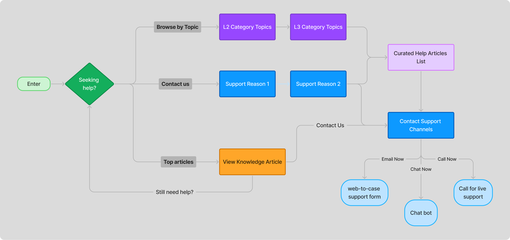
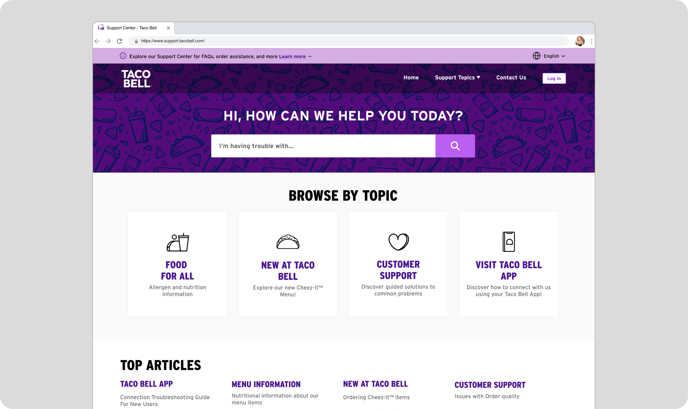
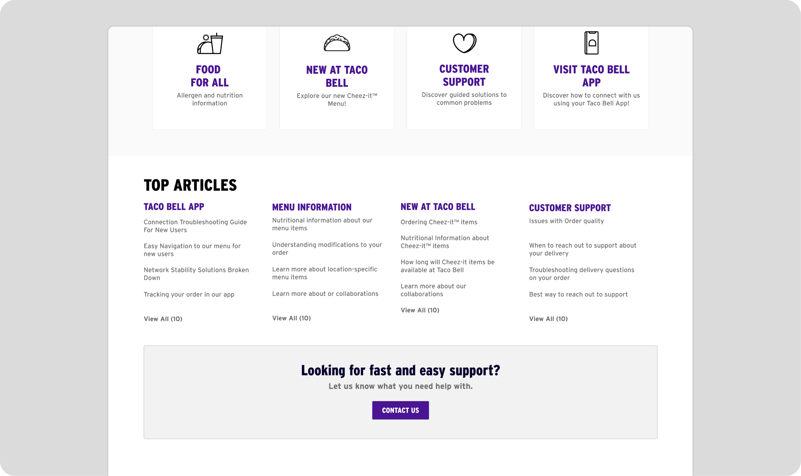
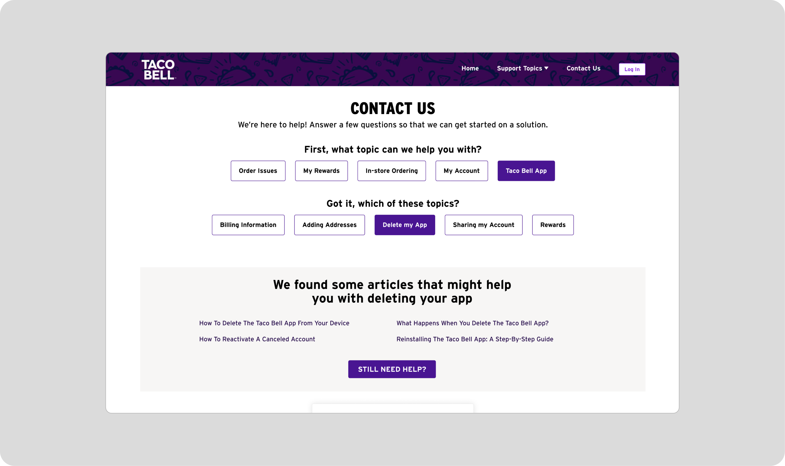
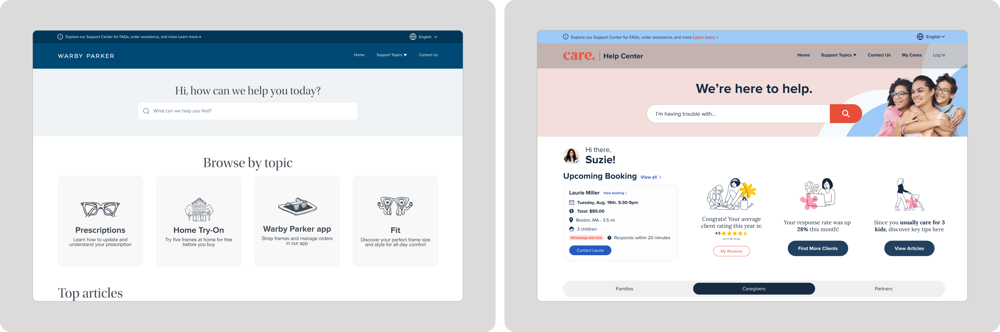
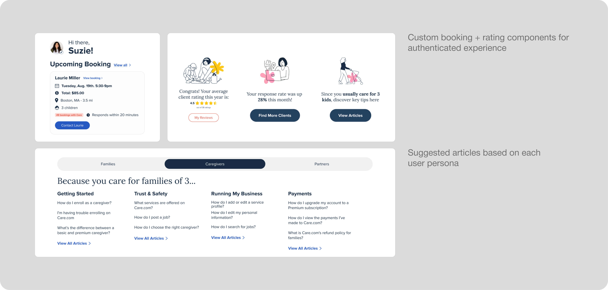

NeuraFlash x Taco Bell
Support site design that secured a $280K deal with Taco Bell
Overview
NeuraFlash needed to design a support site template that implements layers of self service to increase deflection for clients to streamline the delivery process.
The Problem
NeuraFlash clients need a help center site stood up quickly to drive deflection by offering self service when users attempt to reach out to support.
How Will This Improve Client Pitches?
I began discovery by pin-pointing the 3 core pain points that slowed down our client pitches.

Establishing a Clear Defleciton Path
As a result, the user flow gives users the option to get help right away, but nudges them towards self-service first.
Solution for Taco Bell
This gave us the opportunity to spin up cleanly branded help center sites in 2 less weeks than usual.
Deflection path #1: customers are immediately presented with help topics for self-service
Deflection path #2: Suggested articles encourage self-support
Deflection path #3: Tiered topic narrowing provides curated help articles
Scaling Success
The template cultivated interest from new clients including Warby Parker, Care.com, and Bose.
 Results
The design template directly secured a $280K deal with Taco Bell and interest from Bose, Warby Parker, and Care.com
Reflections
This role forced me to discover design solutions that pleased the client while maintaining careful attention to the end users’ pain points.
Stepping up to this challenge meant developing a flexible attitude towards design critique and iteration even at the end stages of the delivery process.